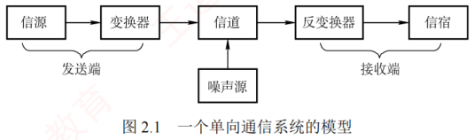
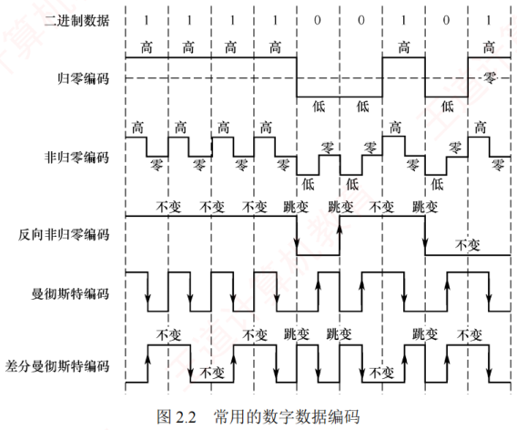
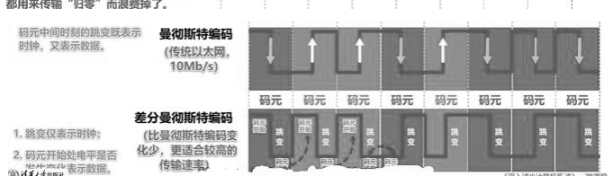
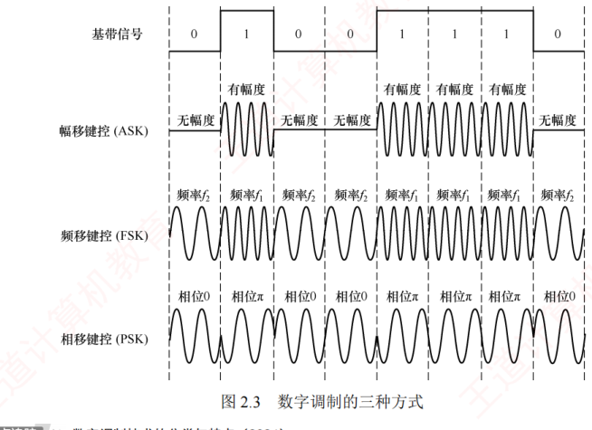
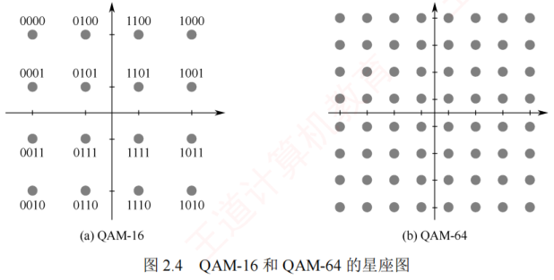

2.1 通信基础
对应王道教材 2.1 节（教材 P30–P35）· 本节属于 408 考纲范围
2.1.1 基本概念
1．数据、信号与码元
通信的目的是传输信息，如文字、图像和视频等。数据是信息的载体，即用于传送信息的实体。信号则是数据的电气或电磁表现，是数据在传输过程中的存在形式。数据和信号均可分为模拟和数字两类：模拟信号的取值是连续的；数字信号的取值是离散的。
在通信系统中，通常用一个固定时长的信号波形表示一个 \(k\) 进制符号，该波形称为码元（也称 \(k\) 进制码元），而该时长称为码元宽度（或信号周期）。每个码元能够承载的信息量与其所表示的信号状态数量直接相关，1 码元可以携带若干比特的信息量。例如，若一个信号周期内可能出现 2 种信号，则每种信号可表示 1 位二进制数，意味着 1 码元可携带 1 比特信息；若可能出现 4 种信号，则每种信号可表示 2 位二进制数，意味着 1 码元携带 2 比特信息。
2．信源、信道与信宿
数据通信系统主要划分为信源、信道和信宿三部分。信源是产生和发送数据的源头，信宿是接收数据的终点，它们通常都是计算机或其他数字终端装置。信道是信号的传输介质，一条双向通信的线路包含一个发送信道和一个接收信道。信源发出信息后，需经发送变换器转换为适合在信道传输的信号；该信号经信道传至接收端后，由接收变换器还原为原始信息，再交付给信宿。噪声源是信道上的噪声及分散在通信系统其他各处的噪声的集中表示。

按传输信号形式的不同，信道分为传送模拟信号的模拟信道和传送数字信号的数字信道；按传输介质的不同，分为无线信道和有线信道。
考点按同步方式分，传输又分为同步传输和异步传输。同步传输以比特流为单位，数据块连续发送、字节之间没有间隔，也没有起始位和终止位，要求收发双方时钟严格同步：可采用外同步（额外增加一条时钟信号线）或内同步（发送端把时钟信号编码进数据中一起发送，如曼彻斯特编码）。异步传输以字节为传输单位，字节之间的时间间隔不固定，接收端只在每个字节的起始处对字节内的比特实现同步，因此通常要在每个字节前后分别加上起始位和结束位。注意："异步"指字节之间异步，字节内部的各比特仍是同步传输的。
信道上传送的信号有基带信号和宽带信号之分。基带信号是由信源发出的未经过调制的原始电信号，当在信道中直接传送基带信号时，称为基带传输；宽带信号是将基带信号调制到高频载波上形成的信号，然后其在信道上传输，这种方式称为宽带传输。
数据传输方式分为串行传输和并行传输。串行传输是指逐比特地按序依次传输，并行传输是指若干比特通过多个通信信道同时传输。串行传输适用于长距离通信，如计算机网络；并行传输适用于短距离通信，常用于计算机内部，如 CPU 与主存之间。
从通信双方信息的交互方式看，可分为三种基本方式：
- 单向通信。只有一个方向的通信而没有反方向的交互，如无线电广播、电视广播等。
- 半双工通信。通信双方都可发送或接收信息，但任何一方都不能同时发送和接收。
- 全双工通信。通信双方可同时发送和接收信息。
单向通信只需一个信道；全双工通信需要两个独立信道（每个方向一个）；而半双工通信可在同一信道上分时双向传输，无须两个物理信道。
3．速率、波特与带宽 考点
速率是指数据传输速率，表示单位时间内传输的数据量，带有两种描述形式：
- 码元传输速率。也称波特率或调制速率，表示数字通信系统每秒传输的码元数，单位是波特（Baud）。码元既可以是多进制的，也可以是二进制的，码元速率与进制无关。
- 信息传输速率。也称比特率，表示数字通信系统每秒传输的比特数，单位是 b/s。
波特和比特是两个不同的概念，但波特率与比特率在数量上又有一定的关系。若一个码元携带 \(n\) 比特的信息量，则波特率 \(M\) Baud 对应的比特率为 \(M\times n\) b/s。
把码元想象成一辆"班车"：波特率是每秒发车数，进制数决定一趟车能载多少比特。2 进制（2 种电平）一趟只捎 1 比特；16 进制一趟能捎 \(\log_2 16=4\) 比特。所以比特率 = 波特率 × 每码元比特数——想让车跑得更快（提高波特率）会撞上奈氏准则的墙，而多装几个比特（提高进制数）则会撞上香农公式的墙。
在模拟通信中，带宽（也称频率带宽）表示信道所能传输信号的频率范围，即最高频率与最低频率之差，单位是赫兹（Hz）。而在数字通信或计算机网络中，带宽用来表示通信线路所能传输数据的能力，即最大数据传输速率，此时带宽的单位不再是 Hz，而是 b/s。
2.1.2 信道的极限容量 考点
任何实际的信道都不是理想的，信号在信道上传输时会不可避免地产生失真。只要接收端能够从失真的信号波形中识别出原始信号，这种失真就对通信质量没有影响；然而，若信号失真严重，则接收端就无法正确识别每个码元。码元传输速率越高、传输距离越远、噪声干扰越大或传输介质质量越差，接收端波形的失真就越严重。
1．奈奎斯特定理（奈氏准则） 考点
实际信道所能通过的频率范围总是有限的。信号中的许多高频分量往往无法通过信道，会在传输中衰减，导致接收端收到的信号波形失去码元之间的清晰界限，这种现象称为码间串扰。
奈奎斯特定理指出：在理想低通信道（无噪声、带宽有限）中，为避免码间串扰，极限码元传输速率为 \(2W\) 波特，其中 \(W\) 是信道的频率带宽（单位为 Hz）。若用 \(V\) 表示每个码元的离散电平数量（不同码元的种类数；例如，若有 16 种不同的码元，则需用 4 个二进制位来表示，此时数据传输速率是码元传输速率的 4 倍），则有
- 在任何信道中，码元传输速率存在上限。若超过该上限，则会产生严重码间串扰，导致接收端无法正确识别码元。
- 信道带宽越大，其传输码元的能力越强。
- 奈氏准则仅限制码元传输速率，并未限制每个码元所能承载的信息量（比特数），因此信息传输速率仍可采用多元调制（如 QAM-16、QAM-64）来提升。
2．香农定理 考点
实际信道中存在高斯白噪声。香农定理给出了带宽受限且有高斯噪声干扰的信道的极限数据传输速率。当速率不超过该极限值时，理论上可以实现任意低的误码率。香农定理定义为
式中，\(W\) 为信道的频率带宽（单位为 Hz），\(S\) 为信号的平均功率，\(N\) 为噪声功率。\(S/N\) 为信噪比，即信号的平均功率与噪声的平均功率之比。
信噪比有无单位记法和分贝（dB）记法两种。当采用无单位记法时，信噪比 \(=S/N\)；当采用分贝记法时，
例如，当 \(S/N=1000\) 时，信噪比为 30dB。使用香农定理计算信道的极限数据传输速率时，信噪比应采用无单位记法。
- 信道带宽或信噪比越大，信息的极限传输速率越高。
- 对于给定的带宽和信噪比，信息传输速率的上限是确定的。
- 只要实际信息传输速率低于该极限值，就能找到某种方法实现近似无差错传输。
- 香农定理得出的是理论极限，实际信道能达到的传输速率要比它低不少。
奈氏准则仅考虑带宽对码元速率的限制，适用于无噪声的理想信道；而香农定理同时考虑了带宽和信噪比，适用于有噪声的实际信道。香农定理表明，在给定带宽和信噪比下，信息传输速率存在上限，即每个码元所能可靠携带的比特数是有限的。
| 题干条件 | 该用哪个 | 原因 |
|---|---|---|
| 无噪声、理想低通信道，问码元速率上限 | 奈氏准则 \(2W\log_2 V\) | 只关心带宽与码元，不涉及噪声 |
| 给出信噪比（dB 或 S/N） | 香农公式 \(W\log_2(1+S/N)\) | 噪声限制了每码元可靠承载的比特数 |
| 带宽、进制数、信噪比全给了 | 两个都算，取较小者 | 码元速率受奈氏限制，信息速率受香农限制 |
2.1.3 编码与调制 考点
信号是数据的具体表示形式，数据无论是数字的还是模拟的，为了传输的目的，都要转换成信号。将数据转换为数字信号的过程称为编码，将数据转换为模拟信号的过程称为调制。
数字数据可以通过数字发送器转换为数字信号进行传输，也可以通过调制器转换为模拟信号进行传输；同样，模拟数据既可通过 PCM 编码器转换为数字信号进行传输，也可直接以模拟信号形式传输（例如传统电话中的语音信号）。由此形成了以下四种编码与调制方式。
1．数字数据编码为数字信号
数字数据编码用于基带传输，即在基本不改变信号频率的情况下直接传输数字信号。编码的核心在于如何用电平或跳变来表示二进制数 0 和 1。常用编码方式如图 2.2 所示。

- 归零（RZ）编码。用高电平表示 1，低电平表示 0（或相反），每个码元中间都会跳变回零电平（"归零"）。接收方可利用这一跳变来调整自身的时钟基准，从而实现收发双方的自同步。但由于归零过程占用了一部分带宽，传输效率会受到一定影响。
- 非归零（NRZ）编码。与 RZ 编码的区别是不进行归零，整个周期都可用于传输数据，因此编码效率最高。但由于缺乏内在的时钟信息，收发双方需额外时钟线来实现同步。
- 反向非归零（NRZI）编码。以码元起始处是否有跳变来表示数据：无跳变表示 1（或依协议约定），有跳变表示 0。跳变本身可用于辅助时钟恢复，兼顾了 NRZ 的高效率与一定的自同步能力，并且避免了 RZ 的带宽浪费。USB 2.0 等标准采用此编码。
- 曼彻斯特编码。每个码元中间都有一次电平跳变，该跳变同时承担时钟同步与数据表示功能。常用下降沿（高→低）表示 1，上升沿（低→高）表示 0，或采用相反的约定。
- 差分曼彻斯特编码。同样，每个码元中间都有电平跳变，与曼彻斯特编码不同的是，该跳变仅用于时钟同步，而不表示数据。数据由码元起始处是否有跳变决定：无跳变表示 1，有跳变表示 0。这种方式具有更强的抗干扰能力。
想象接收方按固定节拍"看表采样"：若一长串 0 或一长串 1 使线路电平长时间不变，接收方的时钟就会慢慢漂移，采错比特边界。曼彻斯特编码强制每个码元中间必跳变一次——这个跳变像节拍器一样不断"敲"醒接收方："新码元的中点在这里"。于是跳变既是时钟（定边界），又能携带数据（跳变方向定 0/1），一举两得；代价是跳变占用了带宽，实际波特率是比特率的两倍。

NRZ 与 NRZI 编码的波形特性（2015 统考）；曼彻斯特编码的波形特性（2013、2015 统考）；差分曼彻斯特编码的波形特性（2021 统考）。
传统以太网采用的就是曼彻斯特编码，而差分曼彻斯特编码常用于令牌环网等高速网络。
| 特性 | 归零编码 | 非归零编码 | 反向非归零编码 | 曼彻斯特编码 | 差分曼彻斯特编码 |
|---|---|---|---|---|---|
| 自同步能力 | 有 | 无 | 需增加冗余位 | 有 | 有 |
| 浪费带宽 | 浪费 | 无 | 不太浪费 | 浪费 | 浪费 |
| 抗干扰能力 | 弱 | 弱 | 弱 | 强 | 强 |
2．模拟数据编码为数字信号
该过程通常采用 PCM（脉冲编码调制），包含三个步骤：
- 采样：对模拟信号进行周期性采样，将其从时间连续变为时间离散。根据奈奎斯特定理，采样频率不得低于信号最高频率的两倍。
- 量化：将采样所得的幅值按预设分级取整，将连续的模拟电平转换为离散的数值。
- 编码：将量化后的整数转换为对应的二进制码。
3．数字数据调制为模拟信号 考点
数字数据调制技术在发送端将数字信号转换为模拟信号，在接收端则将模拟信号还原为数字信号，分别对应于调制解调器的调制和解调过程。图 2.3 显示了数字调制的三种方式。

- 幅移键控（Amplitude Shift Keying，ASK）。通过改变载波的振幅来表示数字信号 1 和 0。例如，用有载波和无载波输出分别表示 1 和 0。这种方式容易实现，但抗干扰能力差。
- 频移键控（Frequency Shift Keying，FSK）。通过改变载波的频率来表示数字信号 1 和 0。例如，用频率 \(f_1\) 和频率 \(f_2\) 分别表示 1 和 0。这种方式容易实现，并且抗干扰能力强。
- 相移键控（Phase Shift Keying，PSK）。通过改变载波的相位来表示数字信号 1 和 0。例如，用相位 0 和 \(\pi\) 分别表示 1 和 0，它是一种绝对调相方式。
与 PSK 不同，DPSK（差分相移键控）是一种相对调相方式，它通过检测当前码元与前一个码元的载波相位差来传输数字信息。例如，用相位是否发生变化分别表示 1 和 0。
4）正交幅度调制（Quadrature Amplitude Modulation，QAM）。在载波频率相同的前提下，通过同时调制振幅和相位，形成复合信号，从而在有限带宽内实现更高的数据传输速率。
QAM 基于正交载波，通常使用两路载波，分别对应正弦波和余弦波。两路载波的频率相同，但相位相差 90°，因此可在同一频带上独立传输而不会相互干扰。以 QAM-16 为例，常用如图 2.4(a) 所示的星座图表示：每路载波均有 4 种不同的振幅，其中横轴表示余弦波的幅度，纵轴表示正弦波的幅度。两路信号组合后可形成 16 种不同的信号状态，每个状态对应星座图上的一个点，并且代表一个 4 位二进制数。接收端收到信号后，通过判断该信号最接近哪个星座点，即可恢复出原始数据。若将每路载波的振幅调制为 8 种，则可组合成 64 种不同的信号状态（QAM-64），每个状态对应一个 6 位二进制数，如图 2.4(b) 所示。

假设波特率为 \(B\)，采用 \(m\) 个相位，每个相位有 \(n\) 种振幅，则该 QAM 的数据传输速率 \(R\) 为
课外拓展 各种参考资料中的常见写法为 16-QAM，即数字在前，但统考真题中的写法是 QAM-16。
4．模拟数据直接传输为模拟信号
在某些场景下，模拟数据直接以模拟信号形式传输，无须数字化。例如，传统电话系统中，语音信号通过双绞线直接传送到本地交换机。此外，若需通过高频信道（如无线电波）传输，则可采用调幅（AM）、调频（FM）或调相（PM）等模拟调制技术，将信号加载到高频载波上。